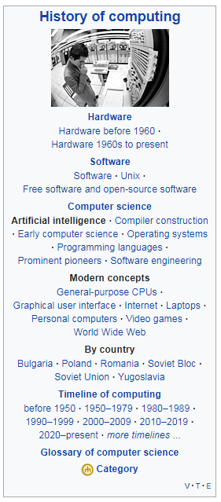

History of AI
The history of Artificial Intelligence (AI) began in antiquity, with myths, stories and rumors of artificial beings endowed with intelligence or consciousness by master craftsmen. The seeds of modern AI were planted by classical philosophers who attempted to describe the process of human thinking as the mechanical manipulation of symbols. This work culminated in the invention of the programmable digital computer in the 1940s, a machine based on the abstract essence of mathematical reasoning. This device and the ideas behind it inspired a handful of scientists to begin seriously discussing the possibility of building an electronic brain.
The field of AI research was founded at a workshop held on the campus of Dartmouth College during the summer of 1956. Those who attended would become the leaders of AI research for decades. Many of them predicted that a machine as intelligent as a human being would exist in no more than a generation, and they were given millions of dollars to make this vision come true.
Eventually, it became obvious that they had grossly underestimated the difficulty of the project. In 1973, in response to the criticism from James Lighthill and ongoing pressure from congress, the U.S. and British Governments stopped funding undirected research into artificial intelligence, and the difficult years that followed would later be known as an "AI winter".
Seven years later, a visionary initiative by the Japanese Government inspired governments and industry to provide AI with billions of dollars, but by the late 80s the investors became disillusioned and withdrew funding again.
Investment and interest in AI boomed in the first decades of the 21st century when machine learning was successfully applied to many problems in academia and industry due to new methods, the application of powerful computer hardware, and the collection of immense data sets.
